Jéssica Martins - Web Developer
About me

Hello! I'm Jéssica Martins. I'm a self-taught, beginner web developer looking for my first work opportunity in the field. My knowledge covers mostly HTML, CSS and JavaScript/frameworks and libraries.
I'm originally from another field, English Language and Literature, and, although I'm passionate about it, with time I also saw myself becoming passionate about technology. Via friends in the field, I slowly discovered open source, Linux and the amazing possibilities programming offers. As I was looking for advancement in my professional career, I saw programming as a promising field, and decided to dedicate myself to its study, and that is a path I've been following with commitment and care for four years already.
Dedication to stuying and self-learning aren't new things in my life. I became proficient in English in adolescence via self-teaching and later obtained a place in a respected university in Brazil, in a course which demanded good knowledge of English (and tested this knowledge in admission exams), as well as a C2 level (the highest one, which indicates fluency) CEFR English language certificate, all without ever setting foot in a language classroom or going through any formal teaching, in a country where English isn't widely used or spoken in daily life. Later I became an English as a Foreign Language Teacher, a profession I held for 6 years, and a translator, which I still am to this day. For this reason, I believe in my mental acuity and capacity to guide myself to growth in an independent manner.
Currently, my knowledge covers front-end web development and the most used technologies for this kind of development, but I'm interested in and willing to learn any programming language or technology needed to advance in my career. I also have an interest in backend and intend to dedicate myself to the field in a few years. As mentioned previously, I really believe in open source and the communities and spirit of collaboration for the common good that it fosters, and I intend to get involved in some of these projects as a learning experience.
Lastly, I would like to say I believe in the capacity of technology to unite communities and in its potential to ease and even solve social issues, always for people's benefit. My commitment to the field is long term, and I continue to work for my first opportunity in it.
Technical skills

HTML
★★★★★★★★☆☆
CSS
★★★★★★★☆☆☆
JavaScript
★★★★★☆☆☆☆☆
React
★★★☆☆☆☆☆☆☆

Git
★★★★★☆☆☆☆☆
IDEs (VSCode, etc.)
★★★★★☆☆☆☆☆